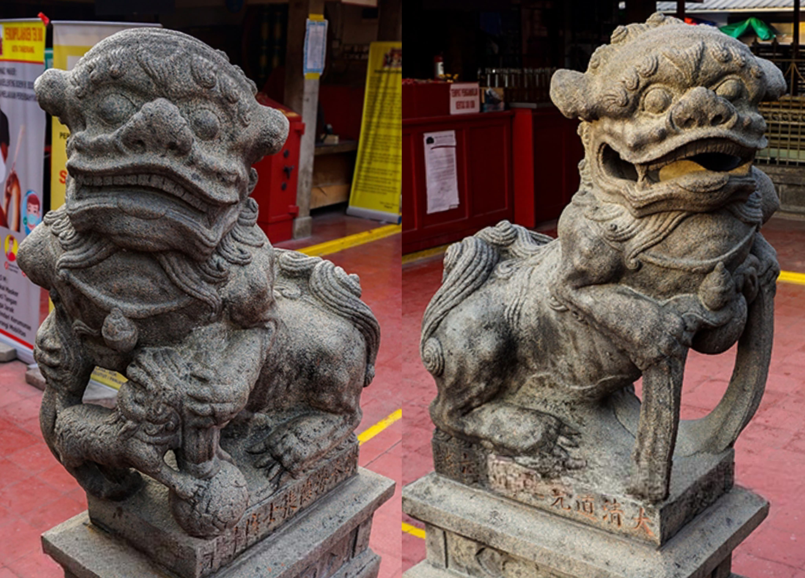
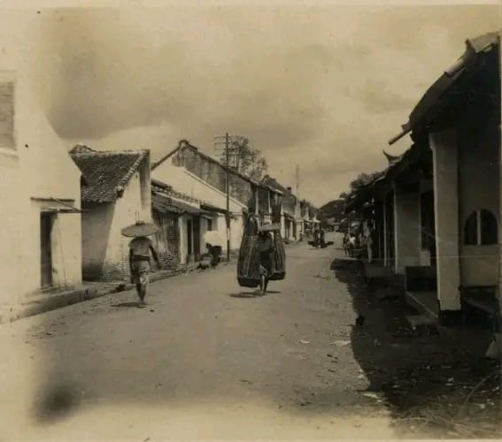
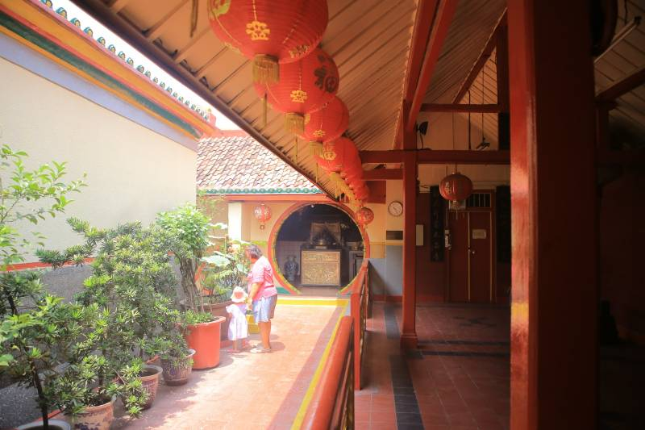

Suasana Imlek di Klenteng Boen Tek Bio.Ruang Utama Klenteng.

Singa Penjaga di halaman depan Klenteng dibuat tahun 1827.Lonceng tua halaman depan Klenteng dibuat tahun 1835.Beberapa orang berfoto di halaman Klenteng Boen Tek Bio tahun 1940.Klenteng Boen Tek Bio tahun 1953.

Suasana sekitar Klenteng tempo dulu.

Halaman belakang Klenteng.